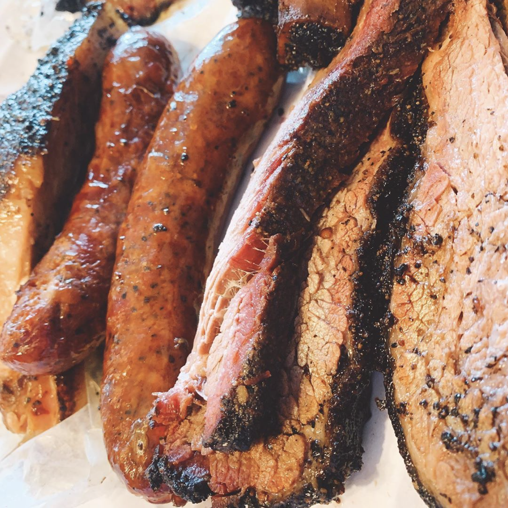
Beef brisket, beer sausage, original sausage, beef rib, and pork belly ribs
Fact: The beef is Akaushi beef, considered one of America’s most prime quality beef because of its intense marbling.
Pro tip: When eating BBQ, alternate between meat and sides so you never get tired of the meats!
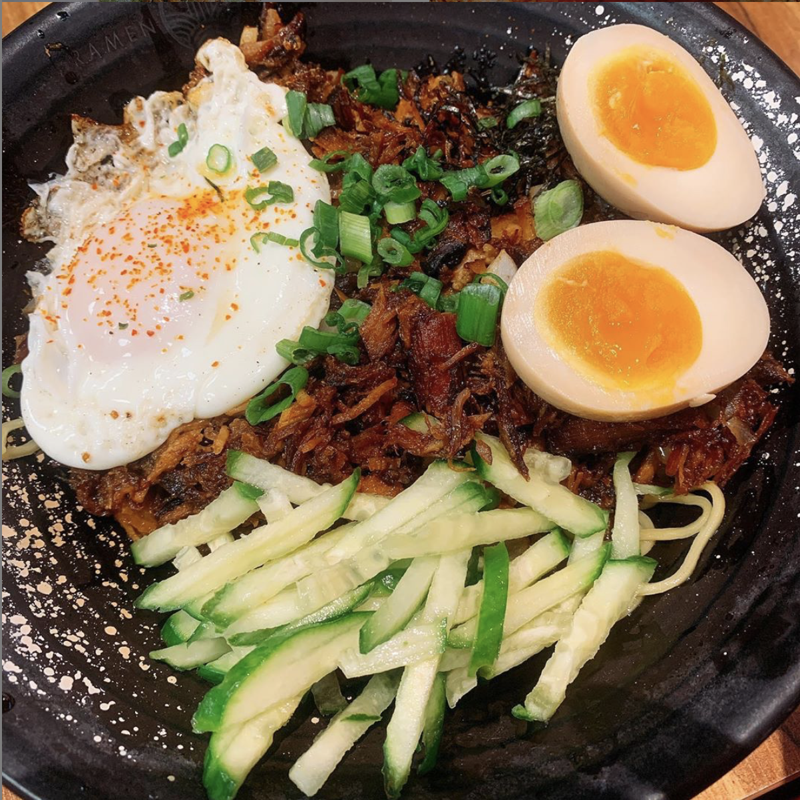
Mazemen まぜめん
Fact: It’s a dry ramen with all the toppings and flavors you love from the usual ramen. You just need to mix it up and enjoy!
Pro tip: Break and mix the egg yolk thorough with the rest of the ramen!
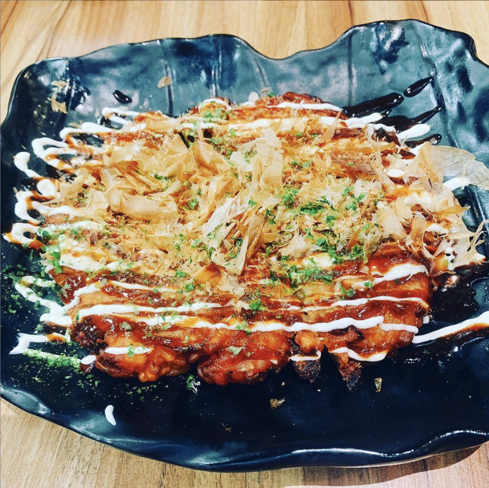
Okonomiyaki
Fact: A Japanese pancake, named after the phrase “okonomi” which means “what you like.” Okonomiyaki originates from the Kansai region of Japan and has many variations depending on the city you’re eating it from. This particular one is Osaka-style okonomiyaki.
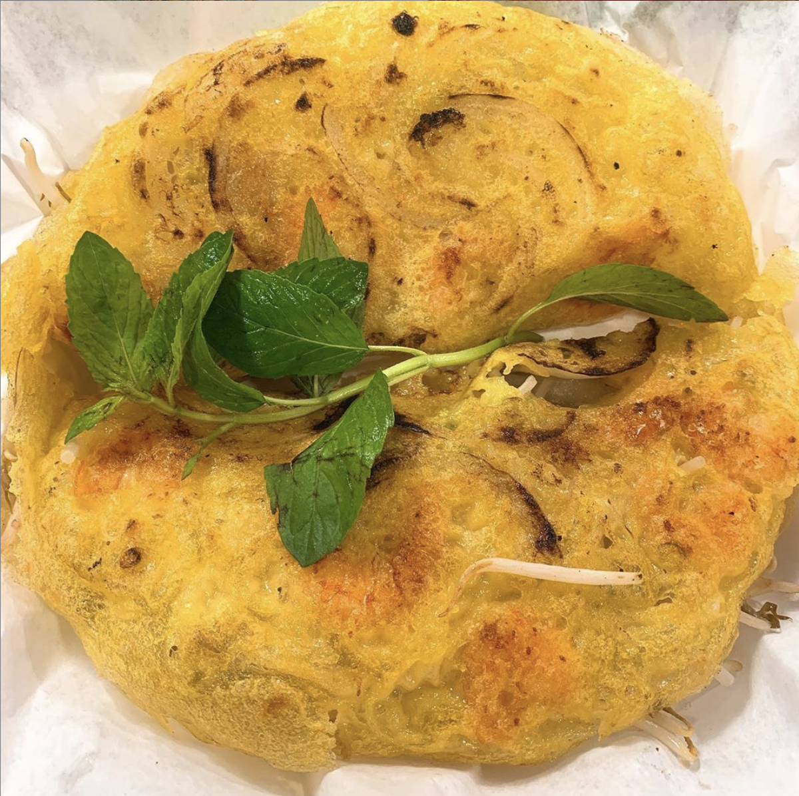
Banh Xeo
Fact: Banh Xeo, literally meaning “sizzling pancake” because of the sound it makes while cooking in the skillet, is a savory pancake stuffed with mung beans, bean sprouts, shrimp, and pork.
Pro tip: When ordering Banh Xeo, ask for the bean sprouts to be left outside of the pancake. That way, the pancake doesn’t become soggy and remains crispy.
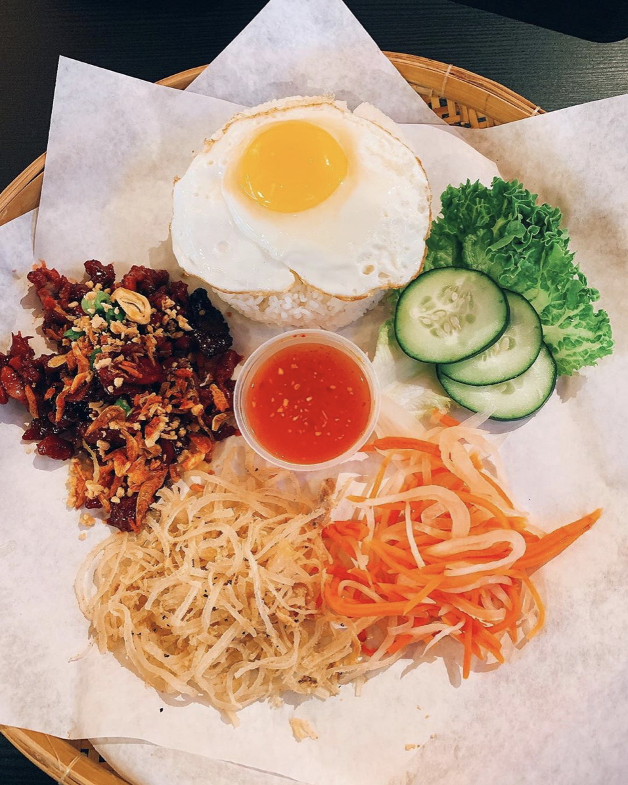
Com Thit Nuong
Fact: A grilled pork and broken rice plate? Yes, please! Asian cuisine, especially Vietnamese cuisine, focuses on a balance of “heats” on a single dish. The pork and the egg are the hotter, heavier, and more savory components of the dish while, the cucumbers and pickled carrots and daikon combat the heat with the cooler, sweet, and sour flavors. This way, the dish never gets boring to the palate.
Pro tip: Don’t skip the pickles and cucumbers! The way to do it is eat the pickles and pork together.
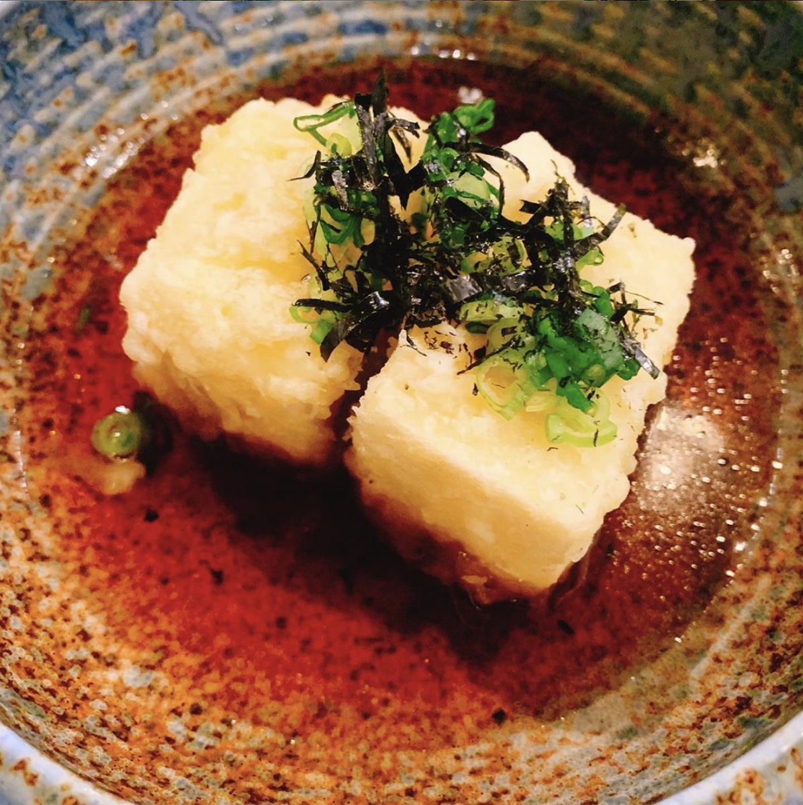
Agedashi Tofu 揚げ出し豆腐
Fact: Agedashi tofu, meaning “lightly deep-fried tofu”. The cubed tofu achieves its crunchy-chewy skin from cornstarch or potato starch and is served in a tentsuyu, a broth combining dashi, mirin, and Japanese soy sauce. The dish is finally garnished with shredded seaweed and negi, green onions.
Pro tip: It’s difficult for the tofu to fully absorb the flavors of the tensuyu through the skin, so break the skin a bit at the top and scoop some of the tentsuyu into the tofu. With the deep fried skin holding the broth and tofu together, you have a little water bomb of flavors.
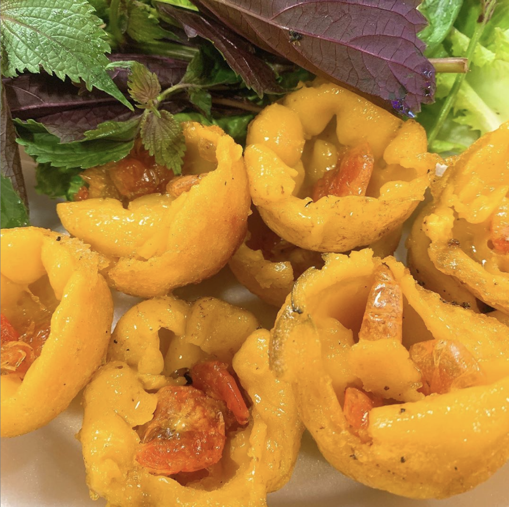
Banh Khot
Banh Khot, Vietnamese savory mini pancakes, is one of Vietnam’s most popular street foods! These crispy, cup-shaped pancakes consists dried mung beans, coconut milk, and cooked tiger prawns.
Pro tip: Banh Khot is meant to be eaten with various vegetables such as Thai basil and mint and dipped in Vietnamese fish sauce, nuoc mam.
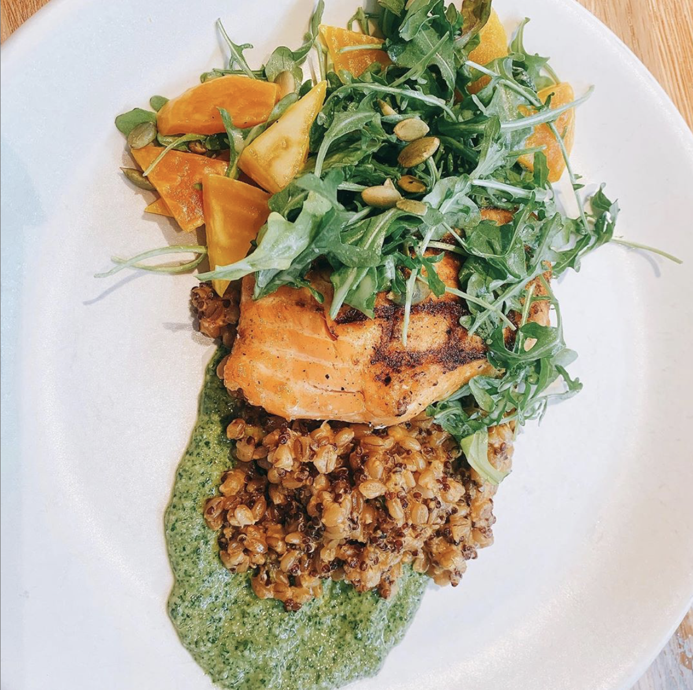
Grilled salmon with roasted beets, quinoa, caramelized onion farro, arugula, cilantro pumpkin seed pesto
Fact: Simple yet delicious grilled salmon. Salmon is a great source of omega 3 fatty acids which are super important for brain health and cognitive intelligence!
Pro tip: Salmon can get dry really quickly when cooked. If you prefer your salmon more moist, ask yours to be cooked medium or medium-rare.
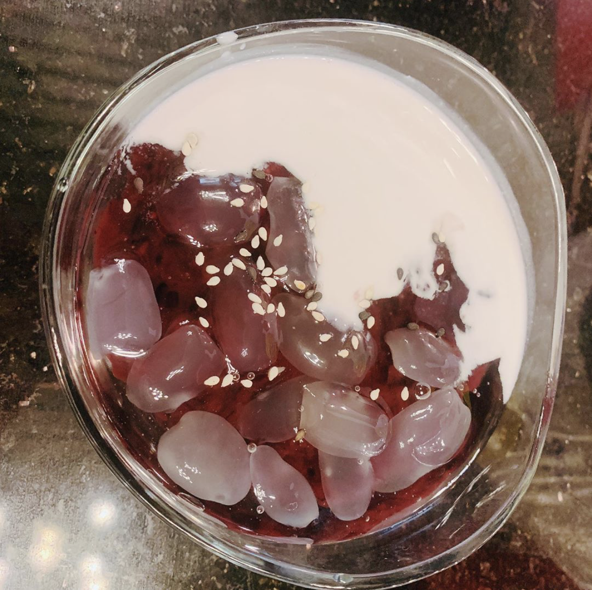
Khao Neow Dam Piak (“Thai Black Sticky Rice Pudding”)
Fact: This glutinous rice dessert is popular in various Asian countries, and therefore, goes by many names. The black sticky rice provides the dessert its earthly flavor and chewy texture which contrasts with the smooth creaminess and sweetness of the coconut cream paired with it.
Pro tip: For toppings, you can add a variety of things such as heart or palm (seen here) or even mango slices.
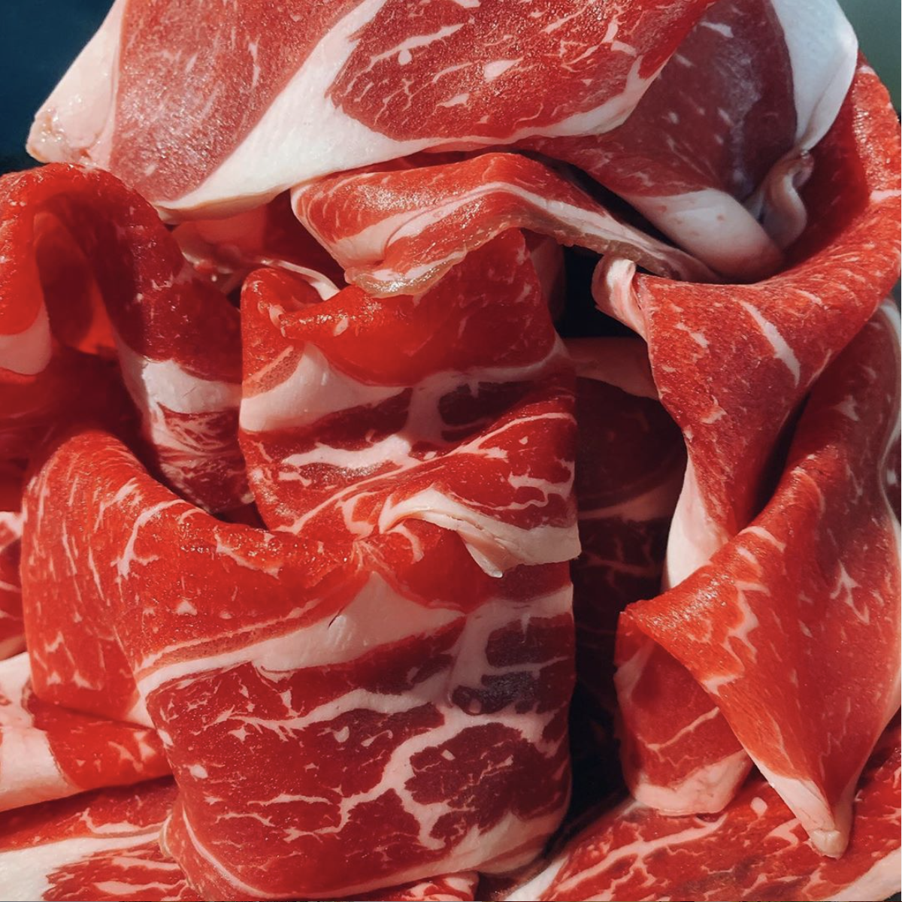
Prime Beef Ribeye (Shabu shabu)
Fact: The ribeye cut of beef is known for being the cut of meat with the most natural marbling. According to the USDA, cuts of meat that have 3% marbling is called Prime Beef. (Snake River Farms)
Pro tip: This fine cut of beef can be enjoyed in various ways, here, it is thinly sliced for Japanese shabu shabu in which one dips the meat into a pot of boiling water for a few seconds to cook the meat.
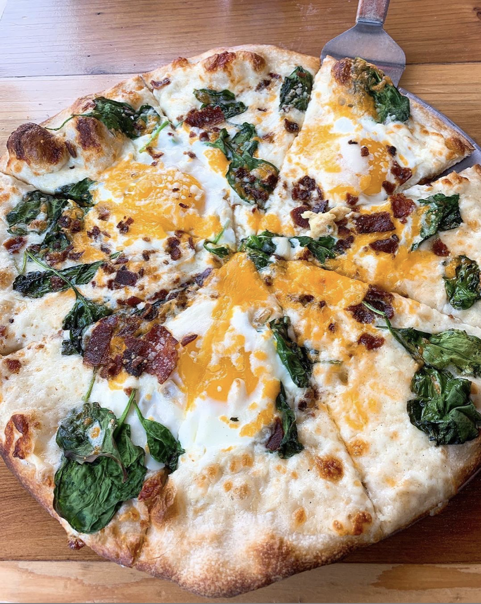
The No Regret
Fact: This breakfast/brunch pizza is 12” of cheese, bacon, eggs, spinach, and primavera sauce baked to delicious perfection.
Pro tip: Don’t forget to mop up the runny egg yolk with your pizza crust!
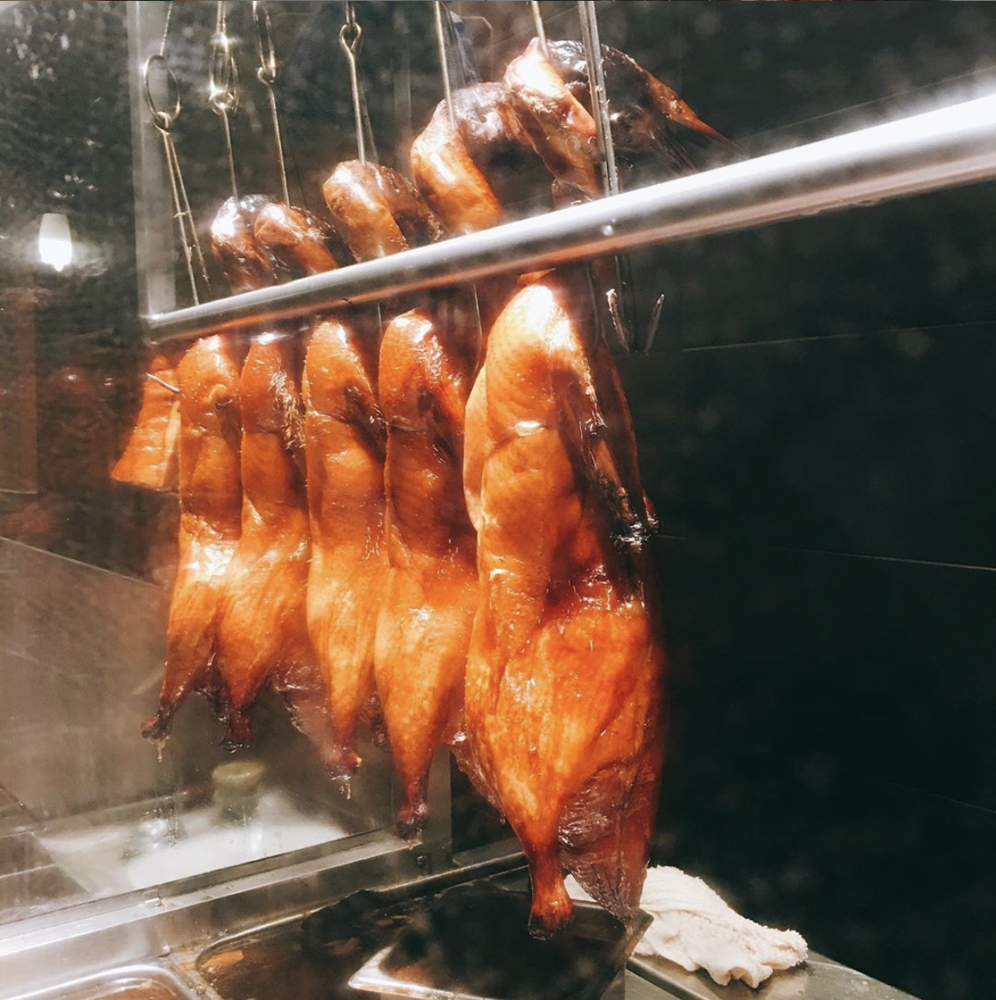
Peking Duck
Fact: This dish originated in Beijing (Peking), China and has been an extremely popular dish for food lovers everywhere. The duck skin is crispy and thin, while the meat is juicy and lean.
Pro tip: Eat the duck with green onions, cucumber, and sweet bean sauce. All this would be put in a bun (bao) or a pancakes. *This is also one of my faves so stay tuned to see more of it!
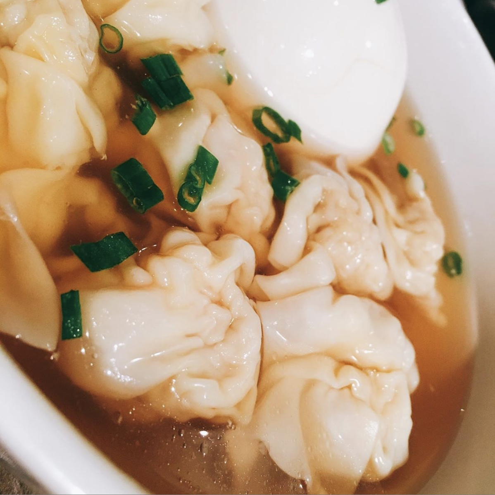
Wonton Soup
Fact: These little dumplings of pork and shrimp are a popular Chinese dish found across many regions of China, and each region has its own variation to the soup.
Pro tip: Add noodles and char siu (sweet meat) to the wonton soup!
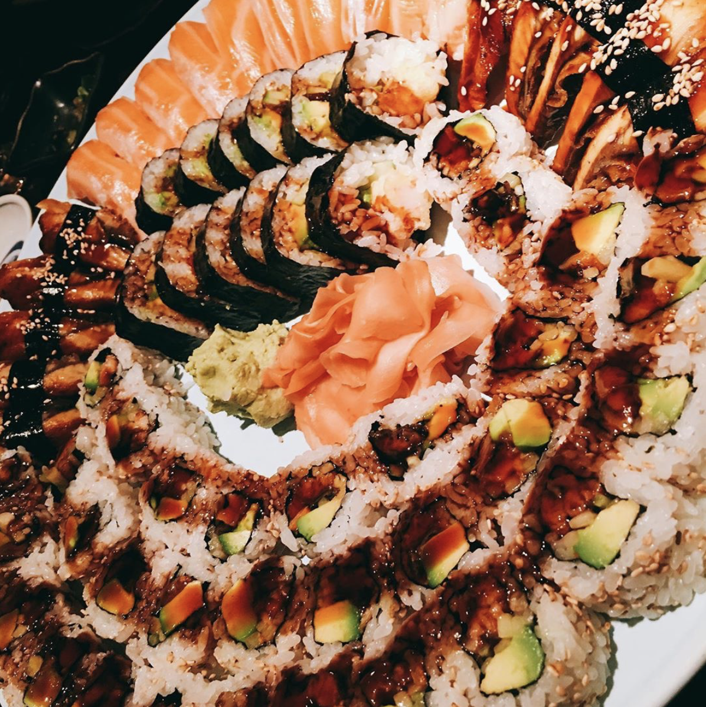
Sushi (eel nigiri, salmon nigiri, salmon belly nigiri, soft shell crab roll, eel roll)
Fact: I’m a huge sushi lover, and my appreciation for it has only grown since my time in Japan. Sushi comes in various forms-nigiri (rice on bottom), temaki (hand rolls), maki (seaweed on outside roll, rolls (seaweed on inside), and sashimi (raw fish)
Pro tip: Eat a slice of ginger to clean your palate when you switch between cooked and raw sushi.
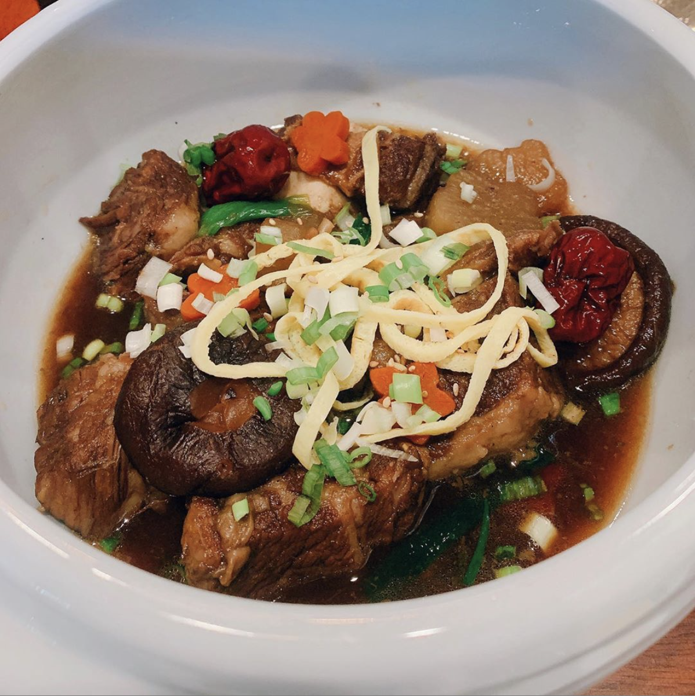
Galbi Jjim 갈비찜 (Korean braised short ribs) with jujubes, mushrooms, and carrots
Fact: Daegu, South Korea is considered the birthplace and home of the most delicious galbi jjim since it was first served in 1972. Dongin-dong district’s galbi jjim street is still famous for its delicious braised short ribs. (Wikipedia)
Pro tip: Eat the meat with a slice of kimchi and rice for added flavors!
{kind=link}
{kind=link}
{kind=link}
{kind=link}
{kind=link}
{kind=link}
{kind=link}
{kind=link}
{kind=link}
{kind=link}
{kind=link}
{kind=link}
{kind=link}
{kind=link}
{kind=link}